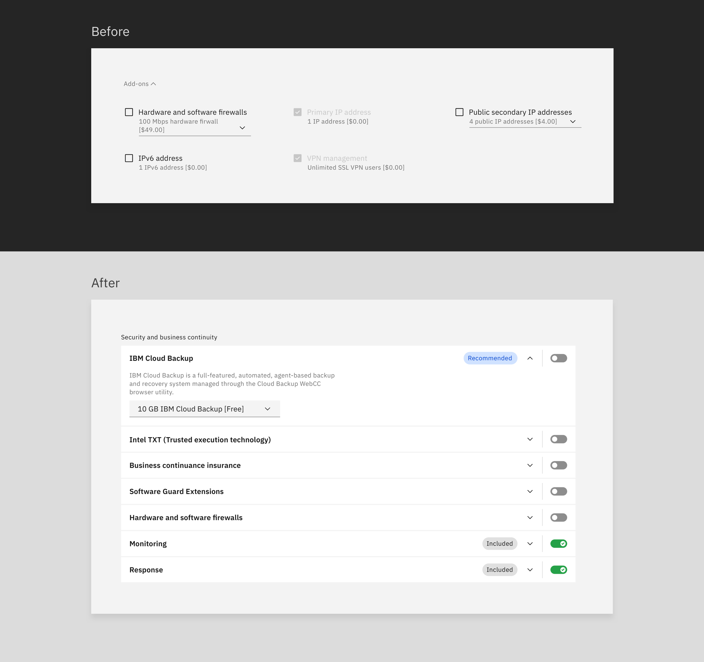
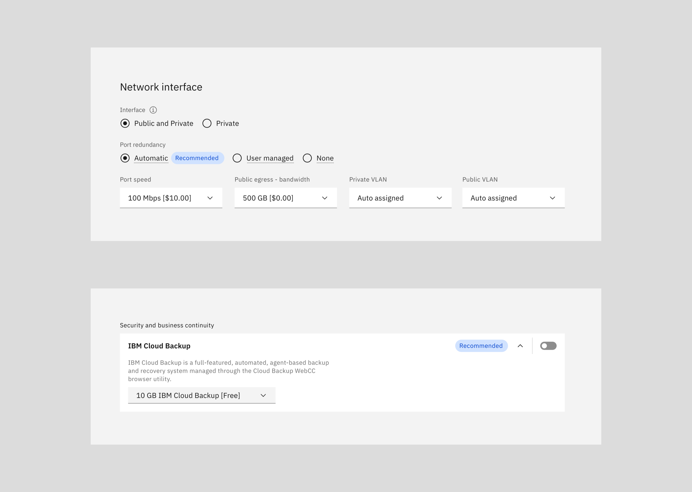
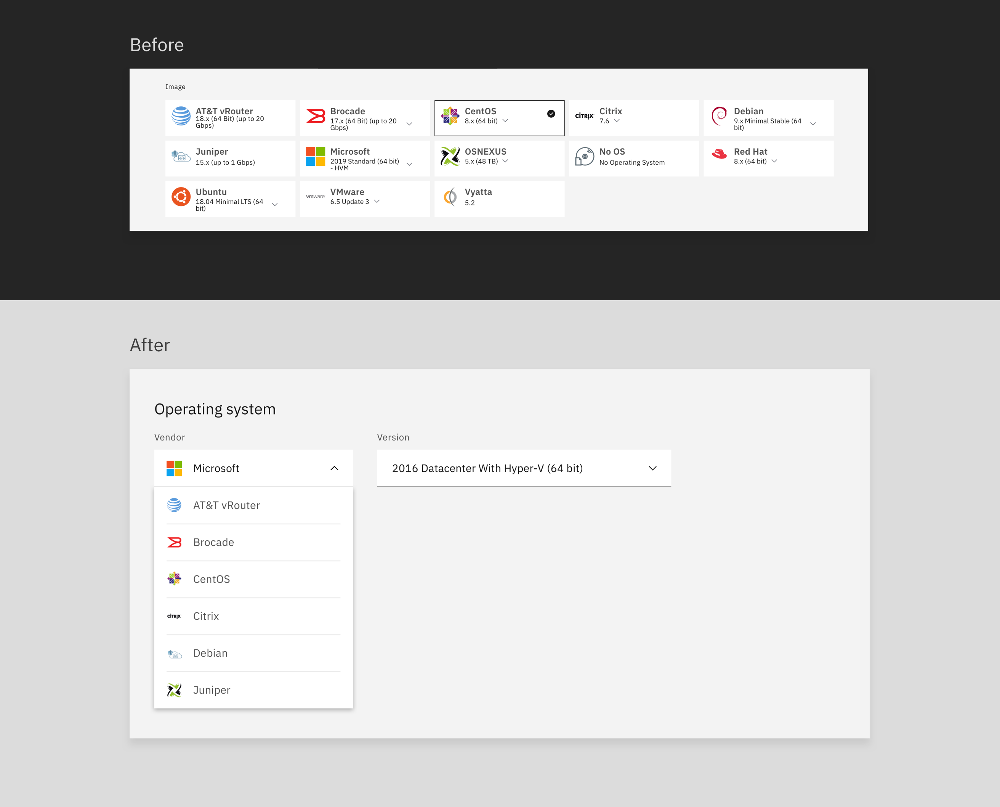
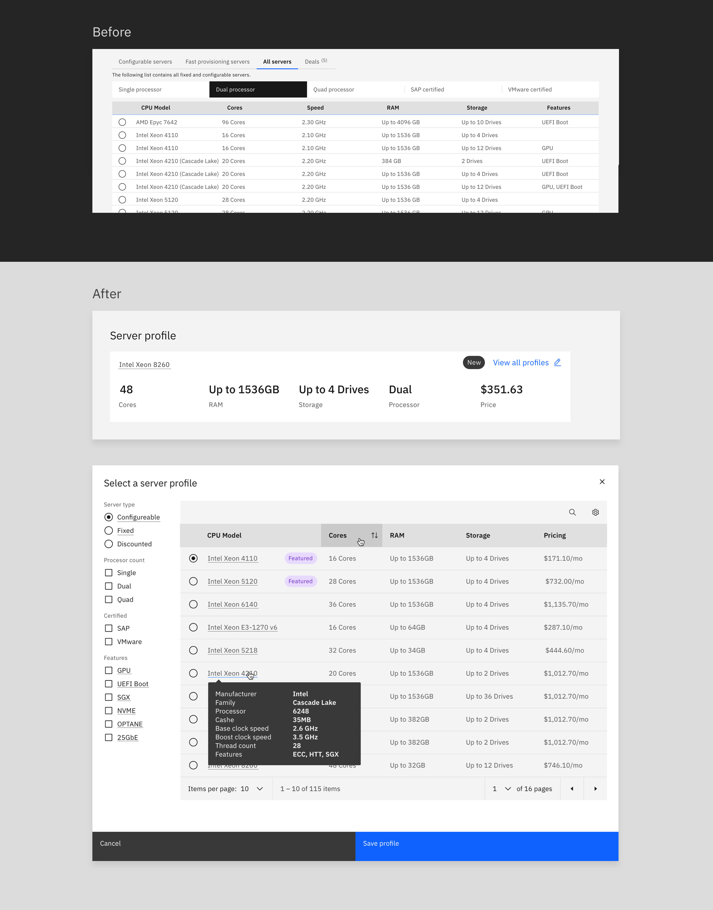

Product designer – UX/UI design, user research, prototyping
Team:1 product manager, 3 devs, 1 product designer (me)
Extended teams:CSMs, support, offering management
Based on metrics from previous user testing, interviews with CSMs and support specialists, I redesigned the order page that simplified inputs, provided recommendations, educated and guided non-technical users and created consistency with other order pages.
The goalsTo make sure we weren’t redesigning for the sake of just refreshing the page’s UI, I wanted to establish the goals/metrics with design and offering management. Design management goals were straightforward: build consistency, simplify, increase NPS score and create a great user experience. Offering management goals focused more on revenue: increase sales of newest servers and increase the purchase of add-ons.
The impact
– 300% increase in user interaction w/ add-ons
– 23% increase in add-ons sales
– Delivered new reusable component for add-ons and OS selector
Grouping all of the add-ons together at the bottom of the page ended up making the most sense after going through a round of user testing. One of the big improvements we made to add-ons was adding descriptions. In testing, users had difficulty understanding what each add-on provided them. I worked with the OM to find and come up with descriptions for each add-on then, we reviewed each one with the content team. This same add-on component was contributed back to IBM Cloud’s design system for other teams to reuse on their order pages.
 Recommended tagsSmart defaults (i.e., defaulting selections based on customer data) were difficult to implement based on feedback from the development team who stated multiple API calls would slow the performance of the page. When interviewing CSMs, we found that many non-technical users navigate this order page. To address their needs, we added recommended tags to key selections that would help users decide on a selection quicker. These 'recommended tags’ were decided by the offering manager based on most commonly selected options.
 Operating system selectorThe operating system selector was long overdue for a redesign. During discussions with the support team, we learned that many customers had difficulty finding and adding the OS version. The click target for selecting the OS version was very small making it difficult to see and select. The new OS selector now aligns better with competitors and creates a simpler selection process.
 Profile selectionThe profile selector component had been newly introduced by the IBM Cloud design system team. However, I made some additional tweaks to enhance the user’s experience further. The big value adds to customers included, feature filters, a sortable pricing column, a tooltip for server details, and featured tags representing most commonly purchased servers.
 Visual + alignmentNot only did this page lack usability for many components, but it also lacked type and visual heirachy. Most sections either lacked headers, or had inconsistent type for headers. To fully fit and finish the page, I aligned components and added type hierarchy.
Finding IBM clients to test with was one of the main limitations of this project. However, I tried to be resourceful in this situation. To compensate for the lack of IBM clients to test, I scheduled feedback sessions with CSMs that worked with customers regularly, and met with 7 CSMs and 3 support specialists. These meetings provided me with insight regarding customers and the pain points they were facing.
Research can influenceThe offering manager was very hesitant to introduce the profile selector component because of the significant change in the experience. However, after presenting research findings, I was able to get their buy-in on introducing this updated component.
{kind=link}
{kind=link}
{kind=link}
{kind=link}